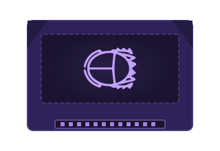

SAVE AND CARTRIDGE AID REQUIRING ADAPTER BOARDS

SCARAB diagnoses and reports on the health of retro game cartridges and their save batteries - powered by an Arduino Mega 2560 with swappable Module Boards for each supported console.
SCARAB is a hardware and software system designed to check the health of retro game cartridges. It verifies save data retention, checks ROM integrity, and reports on cartridge status through a custom cross-platform application.
A console-specific Module Board slots into the SCARAB base unit. The cartridge plugs into the Module. The Arduino Mega 2560 reads data from the cartridge and relays it to the PC software over serial communication.
The SCARAB cross-platform app displays cartridge identity, health status, inserted module type, and provides options to re-identify the cartridge or inspect the active module in detail.
Each console is supported by a dedicated Adapter Board. This keeps the system extensible - new consoles can be added by designing and flashing a new Module without changing the core unit.
Defines the scope, requirements, and intended behaviour of the SCARAB system - both hardware and software components.
VIEW DOCUMENTBackground research covering retro cartridge formats, battery-backed SRAM, Arduino capabilities, and prior art in cartridge readers.
VIEW DOCUMENTSystem architecture, schematic diagrams, module board layout, and software design patterns.
VIEW DOCUMENTComplete writeup of the project including implementation details, testing results, evaluation, and conclusions.
VIEW DOCUMENTGitHub Repository of the Open-Source SCARAB Device and accompanying Cross-platform software.
VIEW REPOSITORY